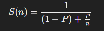
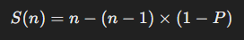
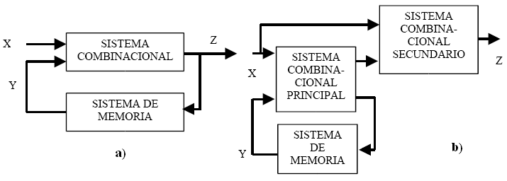
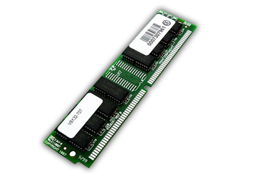

4.1 Aspectos Básicos de la Computación Paralela
La computación paralela es una técnica utilizada para mejorar el rendimiento de sistemas computacionales mediante la ejecución simultánea
de múltiples tareas. Aprovecha la capacidad de realizar varias operaciones al mismo tiempo dividiendo un problema en subproblemas más
pequeños, que pueden resolverse de manera independiente y luego combinarse para obtener el resultado final.
El paralelismo en computación consiste en realizar varias tareas simultáneamente. La computación paralela aprovecha múltiples procesadores
o núcleos de procesamiento para ejecutar tareas de manera concurrente, lo que permite resolver problemas de forma más rápida que en un
sistema de procesamiento secuencial (donde las tareas se ejecutan una tras otra).
Ley Amdahl
Es un principio fundamental en la computación paralela que establece un límite teórico sobre la mejora del rendimiento que se puede lograr
al paralelizar una tarea. Esta ley se enfoca en el impacto que tiene la parte secuencial (no paralelizable) de un algoritmo o programa sobre
el rendimiento total del sistema cuando se usan múltiples procesadores.
La mejora potencial de rendimiento (Speedup) de un programa paralelizado se puede calcular usando la fórmula:

Donde:
- S(n): es el speedup o la aceleración obtenida con n procesadores.
- P: es la fracción paralelizable del programa.
- 1−P: es la parte secuencial del programa (no paralelizable).
- n: es el número de procesadores.
Principales Ideas:
- Si P es pequeño (es decir, la parte paralelizable es baja), aumentar el número de procesadores no mejorará significativamente el
rendimiento, ya que la parte secuencial domina el tiempo de ejecución.
- Si P es grande (la mayor parte del programa es paralelizable), se puede obtener un mejor rendimiento a medida que se incrementa el
número de procesadores.
- A medida que el número de procesadores crece, el rendimiento estará limitado por la parte secuencial del programa. Esto significa
que incluso con una cantidad infinita de procesadores, la mejora no puede superar un cierto límite.
Implicaciones de la Ley de Amdahl:
- La parte secuencial de un programa es crítica para determinar el máximo rendimiento que se puede lograr con paralelización.
- En muchos casos, intentar paralelizar más allá de un cierto punto ofrece rendimientos decrecientes, ya que la parte secuencial
restringe la mejora.
Ley de Gustafson
Argumenta que el rendimiento de la computación paralela debería evaluarse basándose en la escala del problema, en lugar de la cantidad de
trabajo que no puede ser paralelizado. Gustafson asume que, en la práctica, el tamaño de los problemas aumenta con los recursos disponibles,
lo que permite que la parte paralelizable crezca con el número de procesadores.
La fórmula de Gustafson para el speedup es:

Donde:
- S(n): es el speedup con n procesadores.
- P: es la fracción paralelizable del programa.
- n: es el número de procesadores.
Principales ideas:
- A medida que el tamaño del problema crece, también lo hace la parte paralelizable del mismo, por lo que más trabajo puede ser distribuido
entre los procesadores.
- En lugar de enfocarse en la parte secuencial que limita el rendimiento (como en la Ley de Amdahl), Gustafson sugiere que con más
procesadores, se pueden resolver problemas más grandes y complejos en el mismo tiempo o menos.
- Esto implica que la escalabilidad en la computación paralela es más factible de lo que sugiere la Ley de Amdahl.
Implicaciones de la Ley de Gustafson:
- El tamaño del problema aumenta: Si se escala el problema paralelizable al aumentar el número de procesadores, entonces se puede obtener
una mejora casi lineal en el rendimiento.
- Optimismo en la paralelización: La ley de Gustafson proporciona una visión más optimista, ya que sugiere que los problemas más
grandes pueden ser resueltos eficientemente con más procesadores.
Modelos de Consistencia
Los lenguajes de programación en paralelo y computadoras paralelas deben tener un modelo de consistencia de datos también conocido como un
modelo de memoria. El modelo de consistencia define reglas para las operaciones en la memoria del ordenador y cómo se producen los
resultados.
- Single Instruction, Single Data (SISD): Hay un elemento de procesamiento, que tiene acceso a un único programa y a un
almacenamiento de datos. En cada paso, el elemento de procesamiento carga una instrucción y la información correspondiente y ejecuta
esta instrucción. El resultado es guardado de vuelta en el almacenamiento de datos. Luego SISD es el computador secuencial convencional,
de acuerdo al modelo de von Neumann.
-
- Multiple Instruction, Single Data (MISD): Hay múltiples elementos de procesamiento, en el que cada cual tiene memoria privada
del programa, pero se tiene acceso común a una memoria global de información. En cada paso, cada elemento de procesamiento de obtiene
la misma información de la memoria y carga una instrucción de la memoria privada del programa. Este modelo es muy restrictivo y no se
ha usado en ningún computador de tipo comercial.
- Single Instruction, Multiple Data (SIMD): Hay múltiples elementos de procesamiento, en el que cada cual tiene acceso privado a la
memoria de información (compartida o distribuida). Sin embargo, hay una sola memoria de programa, desde la cual una unidad de
procesamiento especial obtiene y despacha instrucciones. En cada paso, cada unidad de procesamiento obtiene la misma instrucción y carga
desde su memoria privada un elemento de información y ejecuta esta instrucción en dicho elemento. Para aplicaciones con un grado
significante de paralelismo de información, este acercamiento puede ser muy eficiente.
- Multiple Instruction, Multiple Data (MIMD): Hay múltiples unidades de procesamiento, en la cual cada una tiene tanto instrucciones
como información separada. Cada elemento ejecuta una instrucción distinta en un elemento de información distinto. Los elementos de
proceso trabajan asíncronamente. Los clusters son ejemplo son ejemplos del modelo MIMD.
Índice
4.2 Tipos de Computación Paralela
1. Paralelismo a nivel de datos
Ocurre cuando el mismo conjunto de instrucciones se aplica a múltiples datos simultáneamente. Es común en aplicaciones que manipulan grandes
volúmenes de datos, como en gráficos y procesamiento de señales.
Características:
- El mismo conjunto de instrucciones se ejecuta en diferentes datos.
- Se aprovecha la estructura de los datos para aplicar operaciones de forma simultánea.
2. Paralelismo a nivel de tareas
Consiste en ejecutar diferentes tareas o subprocesos en paralelo. Cada tarea realiza una parte distinta del trabajo global.
Características:
- Cada tarea realiza operaciones diferentes en los mismos o diferentes conjuntos de datos.
- Las tareas pueden ser independientes o interdependientes.
3. Paralelismo simétrico
Utiliza un conjunto de procesadores idénticos que comparten una única memoria central. Todos los procesadores pueden acceder a los mismos
datos y realizar operaciones simultáneamente.
Características:
- Los procesadores son homogéneos.
- Los recursos son compartidos, lo que requiere una buena sincronización para evitar conflictos de acceso a memoria.
4. Paralelismo asimétrico
En el paralelismo asimétrico, los procesadores no son idénticos. Un procesador principal (máster) puede controlar el trabajo de otros
procesadores subordinados (esclavos), lo que permite que diferentes partes de un problema se ejecuten en procesadores con diferentes
capacidades.
Características:
- Los procesadores pueden tener diferentes capacidades o desempeñar diferentes roles.
- Se asignan tareas específicas a cada procesador, con uno que coordina el trabajo de los demás.
5. Procesamiento en Malla (Mesh Computing)
Múltiples procesadores están conectados en una red que forma una malla, donde cada procesador se comunica con sus vecinos. Se usa en
sistemas distribuidos y simulaciones complejas.
Características:
- Los procesadores se comunican directamente entre sí sin pasar por un controlador central.
- La información fluye en una red distribuida, lo que permite un procesamiento simultáneo en muchas unidades.
6. Paralelismo de memoria compartida
En los sistemas de memoria compartida, múltiples procesadores acceden a la misma memoria física y pueden leer o escribir en ella.
La sincronización es esencial para evitar conflictos.
Características:
- Todos los procesadores tienen acceso directo a una única memoria compartida.
- Los procesadores deben coordinarse para no sobrescribir datos de otros.
7. Paralelismo de memoria distribuida
En los sistemas de memoria distribuida, cada procesador tiene su propia memoria local. Los procesadores se comunican entre sí enviando
mensajes a través de una red.
Características:
- Cada procesador trabaja con su propia memoria local.
- Se requiere pasar datos entre procesadores cuando uno necesita información que reside en la memoria de otro.
8. Paralelismo híbrido
Combina los enfoques de memoria compartida y memoria distribuida, usando ambos en diferentes niveles de un sistema. Por ejemplo, varios
procesadores multinúcleo pueden compartir memoria dentro de un nodo, mientras que los nodos se comunican entre sí a través de una red.
Características:
- Los procesadores dentro de un nodo comparten memoria, pero los nodos se comunican mediante mensajes entre sí.
- Combina la eficiencia de la memoria compartida dentro de nodos con la escalabilidad de la memoria distribuida entre nodos.
9. Computación en GPU (Graphics Processing Unit)
Utiliza miles de núcleos en paralelo para procesar grandes cantidades de datos en paralelo. Es especialmente útil en aplicaciones como
procesamiento de gráficos, simulaciones físicas y aprendizaje automático.
Características:
- La GPU está diseñada para ejecutar muchas operaciones en paralelo de manera eficiente.
- Las GPUs son ideales para tareas que implican operaciones repetitivas en grandes conjuntos de datos.
Clasificación
Las computadoras paralelas se pueden clasificar de acuerdo con el nivel en el que el hardware soporta paralelismo. Esta clasificación es
análoga a la distancia entre los nodos básicos de cómputo.
1. Computación multinúcleo: Un procesador multinúcleo es un procesador que incluye múltiples unidades de ejecución (núcleos) en el
mismo chip.
2. Multiprocesamiento simétrico: Un multiprocesador simétrico (SMP) es un sistema computacional con múltiples procesadores idénticos
que comparten memoria y se conectan a través de un bus.
3. Coputación en clúster: Un clúster es un grupo de ordenadores débilmente acoplados que trabajan en estrecha colaboración, de modo
que en algunos aspectos pueden considerarse como un solo equipo.
4. Procesamiento paralelo masivo: Tienden a ser más grandes que los clústeres, con «mucho más» de 100 procesadores.
5. Computación distribuida: La computación distribuida es la forma más distribuida de la computación paralela. Se hace uso de
ordenadores que se comunican a través de la Internet para trabajar en un problema dado.
6. Circuitos integrados de aplicación específica: Debido a que un ASIC (por definición) es específico para una aplicación dada,
puede ser completamente optimizado para esa aplicación.
7. Procesadores vectoriales: Pueden ejecutar la misma instrucción en grandes conjuntos de datos.
Arquitectura de Computadoras Secuenciales
Es un diseño en el que las instrucciones se ejecutan una tras otra, en un solo flujo secuencial de control, sin paralelismo a nivel de
instrucciones o datos. Este modelo fue predominante en las primeras generaciones de computadoras y sigue siendo fundamental en los sistemas
actuales, aunque las arquitecturas modernas incluyen elementos de paralelismo. Las computadoras secuenciales se basan en la arquitectura de
Von Neumann, que describe cómo el hardware y el software interactúan para ejecutar programas de manera secuencial.
Características clave:
- Ejecución en serie: Cada instrucción se ejecuta en el orden en que se encuentra en la memoria, sin solapamiento entre la
ejecución de diferentes instrucciones.
- Un solo flujo de instrucciones: En este tipo de arquitectura, solo se puede ejecutar una instrucción a la vez.
- Dependencia del ciclo de reloj: La velocidad de ejecución depende del ciclo de reloj, y las instrucciones siguen este ritmo
de manera secuencial.
- Modelo simple: El diseño de las computadoras secuenciales es simple en comparación con las arquitecturas paralelas, pero su
rendimiento es limitado, ya que no puede aprovechar múltiples procesadores o núcleos.

Tipos de sistemas secuenciales
1. Circuitos secuenciales asíncronos: Los cambios de estados ocurren al ritmo natural asociado a las compuertas lógicas utilizadas
en su implementación, lo que produce retardos en cascadas entre los biestables del circuito, es decir no utilizan elementos especiales de
memoria, lo que puede ocasionar algunos problemas de funcionamiento, ya que estos retardos naturales no están bajo el control del diseñador
y además no son idénticos en cada compuerta lógica.
2. Circuitos secuenciales síncronos: Solo permiten un cambio de estado en los instantes marcados o autorizados por una señal de
sincronismo de tipo oscilatorio denominada reloj (cristal o circuito capaz de producir una serie de pulsos regulares en el tiempo),
lo que soluciona los problemas que tienen los circuitos asíncronos originados por cambios de estado no uniformes dentro del sistema o
circuito.
Organización de Direcciones de Memoria
La memoria principal en un ordenador en paralelo puede ser compartida —compartida entre todos los elementos de procesamiento en un único
espacio de direcciones—, o distribuida —cada elemento de procesamiento tiene su propio espacio local de direcciones—.El término memoria
distribuida se refiere al hecho de que la memoria se distribuye lógicamente, pero a menudo implica que también se distribuyen físicamente.

Los accesos a la memoria local suelen ser más rápidos que los accesos a memoria no local. Las arquitecturas de ordenador en las que cada
elemento de la memoria principal se puede acceder con igual latencia y ancho de banda son conocidas como arquitecturas de acceso uniforme
a memoria (UMA).
Un sistema que no tiene esta propiedad se conoce como arquitectura de acceso a memoria no uniforme (NUMA). Los sistemas de memoria
distribuidos tienen acceso no uniforme a la memoria.
Índice
4.3 Sistemas de Memoria Compartida
Son arquitecturas de computación donde múltiples procesadores pueden acceder a una memoria común, permitiendo que los procesos en ejecución
se comuniquen y compartan datos de manera eficiente. Esta arquitectura es común en sistemas multiprocesador y se utiliza para facilitar la
computación paralela.
Redes de Interconexión Dinámicas o Indirectas
Son arquitecturas utilizadas para conectar múltiples procesadores o nodos en sistemas de computación paralela o distribuidos. A diferencia
de las redes de interconexión directas, donde cada nodo está conectado directamente a otros nodos, las redes indirectas utilizan un enfoque
más flexible para la comunicación.
Características de las redes de interconexión dinámicas:
- Conectividad flexible: Las redes dinámicas permiten que los nodos se conecten de diferentes maneras según la necesidad del
momento, adaptándose a las condiciones de la red y a las solicitudes de comunicación.
- Caminos alternativos: Utilizan múltiples rutas para el tráfico de datos, lo que proporciona redundancia y la capacidad de
manejar fallas en la red.
- Enrutamiento: Estas redes emplean algoritmos de enrutamiento que determinan la mejor ruta para enviar datos desde un nodo
de origen hasta un nodo de destino.
- Dinamismo: Pueden cambiar su topología en tiempo de ejecución, permitiendo que los nodos se añadan o eliminen de la red sin
interrumpir la comunicación.
Características de las redes de interconexión indirectas:
- Estructura Topológica: Utilizan nodos intermediarios (switches/routers) para la comunicación entre nodos y tienen una topología
variable que se adapta a las necesidades del sistema.
- Escalabilidad: Permiten añadir nodos fácilmente sin reconfigurar la red y manejan aumentos en la carga de trabajo eficientemente.
- Redundancia y Tolerancia a Fallas: Múltiples rutas para la comunicación mejoran la resiliencia e incluyen redundancia de
conexiones para evitar puntos de falla únicos.
- Dinamismo: Se adaptan dinámicamente a cambios en la carga de trabajo y la topología y utilizan algoritmos de enrutamiento
dinámico para optimizar la comunicación.
- Menor Latencia: Optimización del tráfico y uso de caminos alternativos para reducir tiempos de espera.
- Mecanismos de Control: Implementan protocolos de enrutamiento y control de congestión para gestionar el tráfico.
Redes de Medio Compartido
Son un tipo de red en la que varios dispositivos (nodos) comparten el mismo canal de comunicación para enviar y recibir datos. Estas redes
son comunes en entornos donde se requiere una comunicación sencilla y económica.
Características:
- Acceso compartido: Todos los nodos comparten el mismo medio de transmisión.
- Colisiones de datos.
- Protocolos de acceso al medio:Se utilizan protocolos como CSMA/CD (Carrier Sense Multiple Access with Collision Detection)
en redes Ethernet, que permiten a los dispositivos "escuchar" el medio antes de transmitir para minimizar colisiones.
- Simplicidad: La configuración y mantenimiento de redes de medio compartido son generalmente más simples y menos costosos.
- Flexibilidad: Se pueden agregar o eliminar dispositivos fácilmente sin necesidad de reconfigurar toda la red.
- Rendimiento variable: El rendimiento puede verse afectado por el número de nodos activos y la cantidad de tráfico en la red.
A medida que más dispositivos se conectan, el ancho de banda disponible para cada uno puede disminuir.
Redes Conmutadas
Son un tipo de red en la que los datos se envían a través de diferentes rutas a través de dispositivos de conmutación, como switches y
routers. Estos dispositivos permiten que los paquetes de datos se reenvíen dinámicamente a sus destinos, optimizando el uso del medio
de transmisión y mejorando la eficiencia de la red.

Características:
1. Conmutación de paquetes
Los datos se dividen en paquetes que se transmiten de forma independiente. Cada paquete puede tomar una ruta diferente hacia su destino,
lo que mejora la utilización de la red.
2. Dispositivos de conmutación
Utilizan switches y routers que conectan múltiples dispositivos y gestionan el flujo de datos. Los switches operan a nivel de la capa de
enlace de datos, mientras que los routers operan a nivel de red.
3. Reducción de colisiones
Al segmentar el tráfico y proporcionar caminos dedicados para cada comunicación, se reducen las colisiones que son comunes en redes de
medio compartido.
4. Flexibilidad y escalabilidad
Las redes conmutadas son fácilmente escalables; se pueden agregar nuevos dispositivos sin afectar la red existente. Además, se pueden
configurar diferentes topologías según las necesidades.
5. Control de tráfico
Incorporan mecanismos para gestionar y controlar el tráfico de datos, optimizando el uso del ancho de banda y evitando congestiones.
6. Calidad de servicio (QoS)
Permiten implementar políticas de QoS para priorizar ciertos tipos de tráfico (como voz o video) sobre otros, mejorando la experiencia
del usuario.
Índice